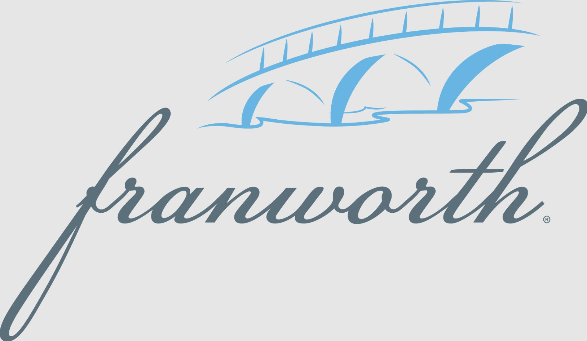
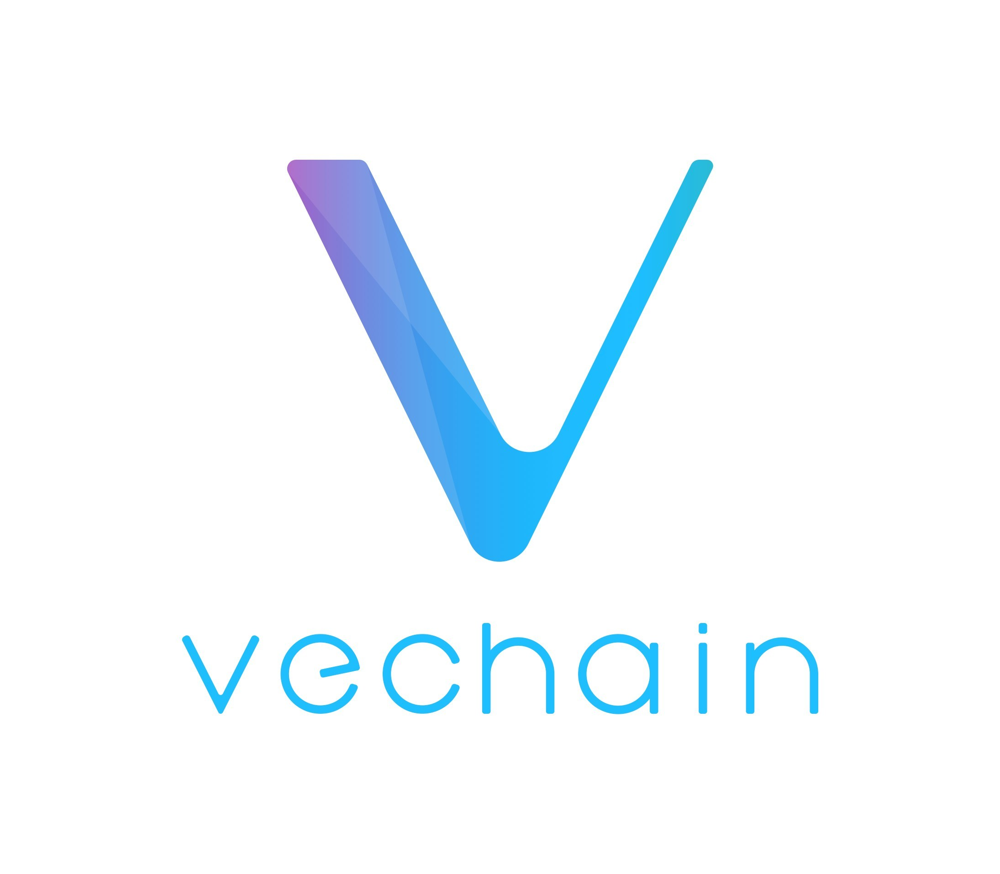

Delivering strategic solutions and measurable impact for organizations across Texas.
Projects Completed
Student Consultants Engaged
Alumni Network
Years of Excellence
We partner with businesses, nonprofits, and social enterprises to deliver strategic consulting solutions. Let's discuss how we can help your organization.
Start a ConversationExplore a selection of our consulting projects. Click to expand for details.
Franworth | Spring 2024
Baylor Consulting Group partnered with Franworth, a former growth private equity platform focused on expanding franchise ownership, to identify where the company could find high-potential future franchise operators and how to effectively reach them. Franworth's model centered on helping qualified individuals become franchise owners by providing upfront capital, brand options, and ongoing operational support.
The engagement focused on building a repeatable candidate sourcing and outreach playbook that Franworth could use to identify, approach, and evaluate potential franchise owners across priority markets. The team presented final recommendations to Franworth leadership, including the project timeline, target candidate pools, market analysis, and recommended locations for outreach.

VeChain | Fall 2025
Baylor Consulting Group partnered with VeChain on a strategic marketing and analytics engagement focused on helping VeBetter, a VeChain ecosystem initiative centered on sustainability, better understand and reach a younger audience. Working alongside the Boston Consulting Group, the team analyzed download and user engagement data, developed a Baylor-focused marketing campaign, and built a practical growth playbook to support VeBetter's broader youth adoption strategy.
The engagement focused on identifying how sustainability-driven digital products can resonate with college students and younger consumers, while staying aligned with VeBetter's mission of encouraging real-world sustainable behavior.
